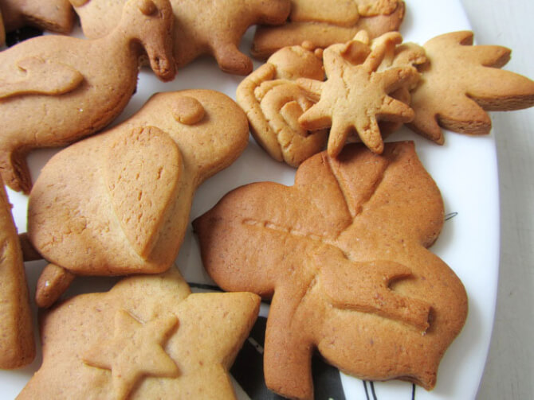

Печиво «Фігурне»

Розглянемо найпростіший рецепт пісочного печива. Просте і смачне печиво не вимагає особливих зусиль, дорогих продуктів, печиво пісочне виходить розсипчастим і смачним. Варіацій на тему цього ласощі величезна безліч. Виберемо найбільш простий рецепт маргаринового печива.
Інгредієнти
Для цієї випічки знадобиться мінімум продуктів:
- хороший маргарин – 300 грам;
- борошно пшеничне – 2,5-3 склянки;
- цукор – 1 склянка;
- сода – 0,5 чайної ложки;
- яйця – 2 штуки.
Спосіб приготування
Почнемо випічку:
- Просіваємо борошно, підсипаємо в неї соду і викладаємо цю суміш гіркою.
- В маргарин, який ми заздалегідь размягчили, поступово додаємо яйця, вливаємо це в борошно. Енергійно рубаємо масу ножем і збираємо в грудку. Тісто повинно залишатися холодним, інакше маргарин розтопиться, просочить борошно і структура тесту зміниться.
- Грудку тіста, обгорнутий плівкою, переносимо на холод на півгодини.
- Робимо з тіста не дуже товстий лист, товщиною 5-7 міліметрів.
- Печиво пісочне робиться з дуже пластичного тіста, тому форму можете надати йому будь-яку. Можна просто гострим ножем нарізати на ромбики, можна склянкою з гострими краями видавити гуртки, можна вирізати формочками печиво, і тоді форма буде у вас будь — півмісяць, зірочка, конус.
- Духова шафа прогріваємо до 180-200 o C. Присипаємо борошном деко, розкладаємо наші заготовки.
- Витримуємо в духовці, поки випічка не прийме приємний золотистий рум’яний колір.